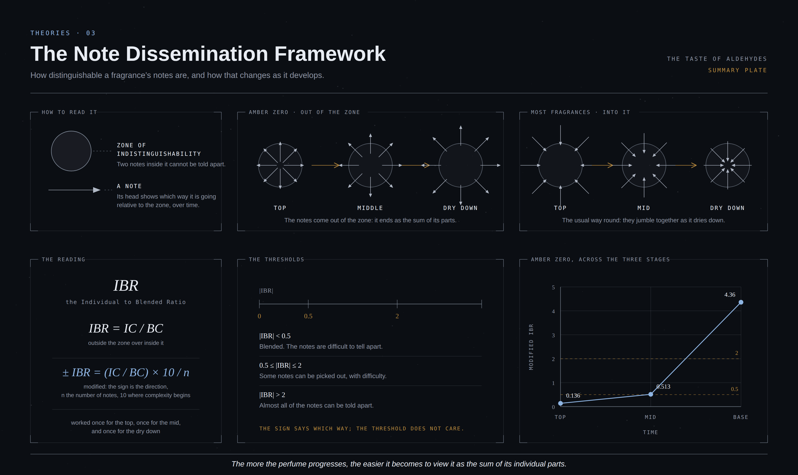

01Premise
This is a theory that tries to explain the evolution of fragrance in terms of how distinguishable notes are. In my explanation, I will be basing it off of an example, the fragrance Amber Zero by ADAR, as it is the fragrance that inspired this theory in the first place. I will therefore be providing a brief explanation of the fragrance, followed by the actual theory.
02An Introduction to Amber Zero and My Thought Process
Amber Zero by ADAR is a fragrance that smells like the bellows of an iron forge inside a mountain. Other interpretations include it being the smell of the deepest parts of the sea, outer space, a lightning cloud, or a tornado. It is harsh and aldehydic, carrying a subtle sweetness that is toxic and malignant. It is a one of a kind fragrance.
Despite the high praise, my working hypothesis (given that I dont actually know the true notes nor how it was made) is that this is a simple fragrance. I do think that unlike the other multifaceted perfumes from the same house, such as Aetherealism or Incantu, it is way more linear. But, the complexity of this fragrance does not come from its evolution of notes in the sense that they change, but rather in the way that they appear.
I will represent my thoughts visually:
Zone of Indistinguishability, where if a makeup component (colloquially and for the purpose of simplicity “notes”) is inside it, then it is virtually impossible to tell it apart from another which is inside this zone.
Note or Component of a given fragrance. The arrow head itself shows the direction relative to the zone of distinguishability (as a function of time).
To put the those two elements together, we get a diagrams like this:
Now, as it happens Amber zero follows exactly this progression;
To put this into words, Amber Zero starts off with a uniform character (which I previously described as a forge in a mountain, or outer space, which diffuses outwards, and so you go from something being strictly outer space into “The parts that constitute outer space.”
The more the perfume progresses, the easier it becomes to view it as the sum of its individual parts.
03Other Fragrances
I may be wrong about this but with other fragrances, it is unusual to have this progression. Usually, I feel it is the other way around; where you have all the notes quite obviously present, and then as it dries down, they get jumbled together, some evaporate and you’re left with an amalgamation of components impossible to tell from one another. In terms of the previous diagrams; this is what it would look like:
04Mathematical Reasoning
If we assign variables to the percentage of the arrows’ bodies inside and outside in the zone of indistinguishability, we would get a quantifiable representation of what I am trying to explain:
Let us say that IC stands for Individual Character, which is part of the arrows outside the circle; and BC is the Blended Character, which is the part of the arrows inside of the circle.
To present it as one number, I will use an Individual to Blended Ratio; an IBR.
I will explain via cases:
Xerjoff
Xerjoff fragrances are usually very well blended; and it is quite difficult to find out the notes. Therefore, the diagram would look like this:
where ≈10% of the arrows are outside; therefore IC = 10%, and ≈90% of the arrows are inside; therefore BC = 90%.
IBR=IC/BC
=0.1/0.9
=0.111
Since the ratio is <0.5 it means the BC dominates and that it is difficult to make out the constituent notes of this perfume.
YSL’s Babycat
Conversely, something like YSL’s Babycat is pretty easy to pick apart;
where ≈90% of the arrows are outside (IC = 90%) and ≈10% of the arrows are inside (BC = 10%).
IBR=IC/BC
=0.9/0.1
=9
Since the IBR is so high, it means you can easily make out the notes of this fragrance.
The thresholds
Now, I think it is also important to define the thresholds. I concluded that the following works best:
- |IBR| < 0.5
- The blending character is dominant; and it is very difficult to make out the notes.
- 0.5 ≤ |IBR| ≤ 2
- It is well blended but a person can still pick out SOME notes here and there.
- |IBR| > 2
- You can make out almost all the notes.
So now, given these thresholds, think back to my example of Xerjoff and YSL Babycat; where Xerjoff had an |IBR| < 0.5, and Babycat had an |IBR| ≫ 2.
05Complications
While making this theory, I found three things that would make the math more accurately representative of what is going on; albeit, at the cost of some simplicity.
- Add a + or − sign to the IBR indicating the direction of a fragrance (in terms of whether the fragrance notes are getting easier or harder to isolate; equivalent to the direction of the arrows). Do note that this works because it is a point measurement and therefore discrete.
- Add a variable indicating complexity.
- Standardize representation as Top/Mid/Dry down.
Complication 1
So for Amber Zero, it would have a + sign, as the fragrance starts out well blended and has its individual components reveal themselves later on as it develops. YSL Babycat on the other hand would have a − sign, as it starts off where it is easy to distinguish the stuff you are smelling and as it moves to dry-down, it becomes a jumbled up mess of ingredients.
Complication 2
The second thing I would do is quantify the complexity. My current best method is by quantifying the the arrows (again, equivalent to components or notes), and reformulating as follows:
IBR = (IC/BC) × 10/n
where n is the number of notes. 10 was a number chosen arbitrarily, based on the fact that if something has 10 notes, then it starts being complex. In my opinion anything less than 10 is pretty simple a large majority of the time.
To put this into practice, let us take two Xerjoff fragrances; with an IC/BC of 0.1. One of them has 5 notes, the other has 20 notes.
For the 5-note Xerjoff
IBR=(IC/BC) × 10/n
=0.1 × 10/5
=0.1 × 2
=0.2
For the 20-note Xerjoff
IBR=(IC/BC) × 10/n
=0.1 × 10/20
=0.1 × 0.5
=0.05
We can see that by integrating the characteristic of compelxity by adding that second part of the equation (× 10/n), we have made it so that the simple fragrances will have an IBR higher than without it (0.1 → 0.2 for the 5 note Xerjoff); and the complex fragrances will have an IBR lower than without it (0.1 → 0.05 for the 20 note Xerjoff).
If we apply this for fragrance that have a high IC/BC initially, while using the same 5 and 20 notes for the purpose of assigning complexity, we would get something like this:
For the 5-note Xerjoff
IBR=(IC/BC) × 10/n
=0.9 × 10/5
=0.9 × 2
=18
For the 20-note Xerjoff
IBR=(IC/BC) × 10/n
=0.9 × 10/20
=0.9 × 0.5
=4.5
We can see that the effect is the same as for the low IC/BC fragrances.
Complication 3
The third complication is essentially doing everything mentioned above thrice for every fragrance: once for the top, once for the middle, and once for the dry down. The way to do this depends.
The first way I thought of is by keeping everything the same essentially; except for the fact that the IC/BC would change depending on where you are in the progression of a perfume.
The second way I thought of is more nuanced and would replace the n in the modified IBR equation (IBR = (IC/BC) × x/n), where n is the corresponding number of notes within the top, mid and dry down independently; while using the total notes of the fragrance as the nominator, denoted as x (equivalent to the maximum theoretical complexity of the fragrance).
The IBR equation that accounts for these complications will be further referred to as “Modified IBR”.
06Complication Examples
Now that the complications were explained, I will further give examples. I will be using all three of them. For complication 3, I will be using its first alternative, as I found it to be more accurate *************CHECK***************
Example 1: De Profundis by Serge Lutens
This is a great linear perfume. It is quite simple with quite identifiable notes. Using fragrantica, I found the total number of notes to be 6. Therefore:
Top
ICTop=0.8
BCTop=0.2
n=6
IBRTop=(ICTop / BCTop) × 10/n
=0.8/0.2 × 10/6
=4 × 1.666
=6.666
=−6.666 (accounting for the direction of the arrows)
Mid
ICMid=0.8
BCMid=0.2
n=6
IBRMid=(ICMid / BCMid) × 10/n
=0.8/0.2 × 10/6
=4 × 1.666
=6.666
=−6.666 (accounting for the direction of the arrows)
Dry Down
ICDry Down=0.8
BCDry Down=0.2
n=6
IBRDry Down=(ICDry Down / BCDry Down) × 10/n
=0.8/0.2 × 10/6
=4 × 1.666
=6.666
=−6.666 (accounting for the direction of the arrows)
Number of total notes = 6
Above, we can see that the |IBRTop|, |IBRMid| and |IBRDry Down| > 2, and therefore the notes are quite distinguishable from one another.
Example 2: October Lake by Bruno Perucci
This is a complex, light fragrance with good blending. It has 20 notes according to fragrantica.
Top
ICTop=0.3
BCTop=0.7
n=20
IBRTop=(ICTop / BCTop) × 10/n
=(0.3/0.7) × 10/20
=0.43 × 0.5
=0.215
=−0.215 (accounting for the direction of the arrows)
Mid
ICMid=0.25
BCMid=0.75
n=20
IBRMid=(ICMid / BCMid) × 10/n
=0.25/0.75 × 10/20
=0.333 × 0.5
=0.1666
=−0.1666 (accounting for the direction of the arrows)
Dry Down
ICDry Down=0.15
BCDry Down=0.85
n=20
IBRDry Down=(ICDry Down / BCDry Down) × 10/n
=(0.15/0.85) × 10/20
=0.176 × 0.5
=0.09
=−0.09 (accounting for the direction of the arrows)
In our second example, we can see that October Lake progressively got more difficult to isolate the notes; as the IBR moved from −0.215 to −0.1666 to −0.09.
Example 3: Amber Zero by ADAR
For this fragrance, the complexity is nothing but guesswork, as there is no number available publicly for the number of notes in it. I decided to assign n = 13.
Top1
ICTop=0.15
BCTop=0.85
n=13
IBRTop=(ICTop / BCTop) × 10/n
=(0.15/0.85) × 10/13
=0.176 × 0.769
=0.136
=+0.136 (accounting for the direction of the arrows)
Mid
ICMid=0.4
BCMid=0.6
n=13
IBRMid=(ICMid / BCMid) × 10/n
=0.4/0.6 × 10/13
=0.666 × 0.769
=0.513
=+0.513 (accounting for the direction of the arrows)
Dry Down
ICDry Down=0.85
BCDry Down=0.15
n=13
IBRDry Down=(ICDry Down / BCDry Down) × 10/n
=(0.85/0.15) × 10/13
=5.666 × 0.769
=4.36
=+4.36 (accounting for the direction of the arrows)
We can also graph that:
07Making Sense of the Results
To put all the prior findings into intelligible English; ADAR’s Amber Zero starts out as something so well blended, it feels it has a uniform character. It is void, it is space, it is deep dark sea. With a top |IBR| value of <0.5, it is truly one unified smell.
For the Middle, 0.5 < |IBR| < 2; and it just barely makes it over 0.5, meaning that this is the point where it starts peaking its head out. The void and the deep dark sea stop being pure nothing ness, and they turn into settings that contain SOMETHING; and that something is the notes taking shape.
In the dry down, you get an IBR of 4.36, so |IBR| is >2. This means that here, there is a chracter now tangibly made from more components. That void has dark matter, clouds of gas planets and celestial bodies somewhere in the distance; and that deep dark sea now has organic matter, particulates that bubble up closer to the surface. The smell is now something that you can touch, write down and deconstruct.
08Assumptions
-
The arrows all face in the same direction. This assumes that all the notes of a given fragrance either become more or less discernable, and at the same rate. In truth many diagrams to be drawn accurately would have arrows facing inwards while other arrows of the same diagram faced outwards:
What a diagram would look like if every note were examined and represented independently. Though, if we were to actually try and eliminate this assumption and account for each note’s variation within a given perfume, then it would overcomplicate things to an extent I do not have the time to explore.
I do suspect though that if you did want to do it, you could start by assigning each arrow a weight factor based on how much that note is quantifiably contributing to the fragrance character a given point in time. You would also add a weighing variable to the arrow heads, indicating the rate of change of discernment for that one particular note. I think both of those COULD be visually represented by width/thickness.
A way that the existing formulation helps counteract this assumption is the third complication, which is the presentation of the IBR on a 3 point (or more) chronology scale: top, mid and base. This means you have a temporal comparison of any given fragrance.
Another thing a person can do to make this assumption more concrete and more forgiving is that for any diagram with bidirectional facing arrows, you would take the direction characterizing the majority of the arrows (so that if 6 face into the circle and 4 from the circle, then the direction is generally into the circle).
-
Another assumption is that all arrows are equal in their being in the zone of indistinguishability (circle); which isn’t the case because one note will be more dominant than others and therefore more easier to pick out than others. Since this model is for the general character of a perfume, I am content leaving it it out.
-
For the second complication, you need to know the number of notes. If you do not I suggest making n in IBR = IC/BC × 10/n equal to 10, so it doesn’t affect the IBR. You can also guess.
09Application
In reality, this probably will not be used for every fragrance to get to the bottom of it, however, I found it to be an optional overcomplication for the question: Do the notes of a fragrance get more or less recognizable over time? I can also see it being used if you want to create a perfume, and want to objectively quantify your work for self assessment purposes. Other than that, its just fun for nerds.
For the people that want to try it out; I have created a calculator that gives you the outcomes:
10Footnotes
- i found that aldehydes were possible to isolate from the very beggining. ↩